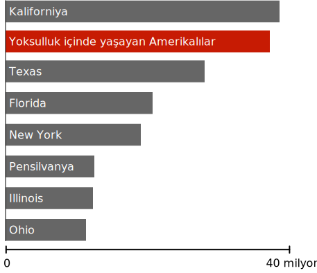

Mal Varlığı, ölçekli gösterim
$1,000
$68,000 (ABD orta halli hane geliri)
$1 milyon
$1 milyar
$185 milyar (Jeff Bezos'un serveti)
Şaka şaka, henüz yolun üçte birindeyiz. Kaydırmaya devam edin, daha görecek çok şey var.
%0,0001 içerisindeki kişilerin akıl almaz serveti, çok zengin insanların servetlerini bile gölgede bırakıyor.
Bu insanlar kendilerini inanılmaz derecede zengin görebilir ve genellikle eşitsizliği azaltmayı amaçlayan politikalara karşı çıkabilirler.
Ancak çoğu, kendileriyle süper zenginler arasındaki devasa uçurumu tam olarak kavramış değiller.
Neredeyse tüm paranın süper zenginlerin elinde olmadığı bir dünyaya sahip olabiliriz.
Hiçbir insan bu kadar paraya ihtiyaç duymaz ve bu miktarı hak etmez.
En zengin 400 Amerikalı ($3.2 trilyon)
Bir trilyon dolar o kadar büyük bir rakam ki, "bilmem kaç gazilyon zilyon dolar" da diyebilirsiniz. Dolayısıyla bu bölümde, bu servetin çeşitli parçalarıyla neler yapılabileceğine bakarak bu rakamın ölçeğini anlamaya çalışacağız.
Devam ederken, aklınızda tutun: tüm bu servet o kadar küçük bir grup tarafından kontrol ediliyor ki, tek bir 747 uçağına sığabilirler—hem de 260 koltuk boş kalacak şekilde.
Bu paranın %10'unun azıyla ne yapabiliriz?
Dünyadaki her insanı koronavirüse karşı aşılamak
Aşı ve taşıma maliyetine, tüm insanları aşılamak yaklaşık $200 milyar gibi bir miktara denk geliyor, şu an 400 Amerikalı'nın sahip olduğu servetin sadece %6'sı. Aşılama programına para verildikten sonra, bu kişiler hâlâ pandemi öncesine göre $40 milyar daha zengin olacaklardı.
Küresel aşılamaya duyulan umutsuz insani ihtiyacı bir kenara bıraksak bile, varlıklı ülkelerin bunu yapması gerektiğine dair güçlü bir çıkarcı argüman var: COVID dünyada ne kadar uzun süre kalırsa, aşıya dirençli bir varyantın çıkma ve yaptığımız tüm aşı ilerleyişini yıkma olasılığı o kadar fazla.
Dünya Sağlık Örgütü şu anda 2021'in sonuna kadar yoksul ülkelerde yaşayanların yaklaşık %20'sini aşılamayı hedefleyen küresel bir aşı bağış programı düzenliyor ve bu yaklaşımın bile önemli finansman eksiklikleri var.
Sıtmanın kökünü kesmek
Sıtma, insanlık üzerinde şimdiye kadar görülen en kötü bulaşıcı hastalıklardan biridir ve muhtemelen tarihteki diğer bulaşıcı hastalıklardan daha fazla insanı öldürüyor. Sadece 20. yüzyılda sıtma, Kara Veba'dan daha fazla insanı öldürdü.
Bu ölümlerin tamamı önlenebilir. Sıtmayı tedavi etmek ve önlemek, gelişmiş dünyada evrensel olarak uygulanan iyi anlaşılmış bir bilimdir.
Sıtmanın 2030 yılına kadar risk altındaki kişi başına yılda yaklaşık $1,84 veya toplamda yaklaşık $100 milyar maliyetle küresel olarak ortadan kaldırılabileceği tahmin edilmektedir. Bu, şu anda en zengin 400 Amerikalının sahip olduğu servetin yaklaşık %3'ü olacaktır.
Bugün yaklaşık 800 çocuk sıtmadan ölecek. Küçük bir grup süper zengin, yokluğunu fark etmeyecekleri kadar küçük bir miktar para için onu durdurabilirdi. Ama yapmamayı seçiyorlar.
Amerika'daki tüm gecikmiş tıbbi borçları silmek
Amerikalıların, kredi raporlarında görünecek kadar vadesi geçmiş yaklaşık 81 milyar dolarlık tıbbi borcu var. Bunlar genellikle küçük ve medyan değeri kişi başına 207 dolar olan borçlardır.
Bu borçlar 50 milyondan fazla Amerikalının kredisini engelliyor ve konutlarına, istihdamına ve borçlanma seçeneklerine uzun vadeli zararlar veriyor. Bu borcu dolar başına ödemenin maliyeti, 400 Amerikalı tarafından kontrol edilen servetin yaklaşık %2,5'i olacaktır.
Her Amerikalıyı yoksulluktan kurtarmak.
Yoksulluğa kıyasla ABD eyaletlerinin nüfusu, 2021
Amerika'daki her bir kişi, yoksul aile başına bir kerelik yaklaşık $10.000 (ve yoksul bireyler için yaklaşık $7.000) tutarında bir nakit yardımıyla yoksulluk sınırının üzerine çıkarılabilir. Toplam maliyet, şu anda 400 kişi tarafından kontrol edilen servetin %5'inden biraz fazlası olan 170 milyar dolar olacaktır.
Tek seferlik bir yardımın kronik yoksulluk üzerinde kalıcı bir etkisi olabileceği mantığa aykırı görünebilir. Ancak yoksullukla ilgili şaşırtıcı gerçeklerden biri, onun akıcı olmasıdır. Amerikalılar yaşamları boyunca birçok kez yoksulluğa girip çıkarlar, iyi bir yılın büyük ve uzun süreli bir etkisi olabilir.
Artık çok sayıda veri tek seferlik nakit transferlerinin yerel bir ekonomiyi kalıcı olarak dönüştürebileceği fikrini destekliyor. Ani bir düşüş göz önüne alındığında, insanlar geleceklerine yatırım yaparlar. Okula geri dönerler, ulaşım sağlarlar, çocuk bakımı için ödeme yaparlar, sıkıntı sebebi olan borçlarını öderler ve kariyer beklentileri ile finansal geleceklerini iyileştirmek için her türlü şeyi yaparlar.
ABD'de herhangi bir yılda yoksulluktan kurtulan tüm insanların, yaklaşık yarısı sonrasında en az beş yıl boyunca yoksulluktan uzak duruyor. Yaklaşık üçte biri on yıl sonra hâlâ yoksulluktan uzak bir konumda oluyor.
Bu, tüm Amerikalılar için kalıcı bir çözüm olmayacaktır. Elbette bazıları çabucak yoksulluğa dönecek ve diğerleri o kadar büyük borçlarla karşı karşıya kalacak ki, nakit yardımı çok az fark yaratacaktır. Ancak on milyonlarca Amerikalı için bu, yaşamı değiştiren bir olay olacaktır. Gelecek on yıllar boyunca ekonomimizi yeniden şekillendiren ve bir nesli tanımlayan sosyal bir program olacaktır.
Yeryüzündeki her insana temiz içme suyu ve tuvalet erişimi sağlayın.
Yaklaşık 844 milyon insanın hiçbir şekilde temiz suya erişimi yok. Yaklaşık aynı sayıda insanın da herhangi bir tuvalete erişimi yok ve bu nedenle açıkta tuvaletini yapıyorlar.

Temiz suya erişimi olmayanlar
Kirlenmiş su, kolera, dizanteri ve tifo dahil olmak üzere önemli bir hastalık kaynağıdır. Kirlenmiş suyun her yıl yaklaşık 829.000 insanı öldürdüğü ve bunun da onu dünyanın en büyük katillerinden biri haline getirdiği tahmin ediliyor. Dünyadaki herkes için temiz su ve atık bertarafı sağlamanın maliyeti $240 milyar olacaktır, ya da en zengin 400 Amerikalının sahip olduğu servetin %7.5'i.
Bu paranın %40'ının azıyla ne yapabiliriz?
Önümüzdeki 100 yıl boyunca her Amerikalıya ücretli doğum ve babalık izni sağlamak
Bunu tahmin etmek, ele alınan diğer programlardan daha karmaşık olacaktır. Çünkü masraf bir kerelik değil sürekli olacaktır ve sağlanan faydanın boyutuna bağlı olarak maliyet oldukça değişkendir. Yine de, %5 bağış ödeme kuralını kullanarak süper zenginler burada düşünülenden yaklaşık 12 kat daha cömert bir aile izni programını sonsuza kadar finanse edebilir ve enflasyonu hesaba katsak bile, sonsuza kadar zenginleşmeye devam edebilirler.
Her Amerikan hanesine $10.000 vermek
2020'de koronavirüs Amerika'yı kasıp kavururken, çalışan insanlar sık sık erken açılma nedeniyle gerçekleşen ölümler ile karantina nedeniyle oluşan ekonomik depresyon arasında imkansız bir seçim arasında bırakıldı. Bu yanlış seçimde konuşulmayan, Amerikalıların yaşam giderlerini iş olmadan ya da sürdürülemez hükümet açığı harcamaları olmadan ödeyemeyecekleri varsayımıydı, para başka nereden gelebilirdi?